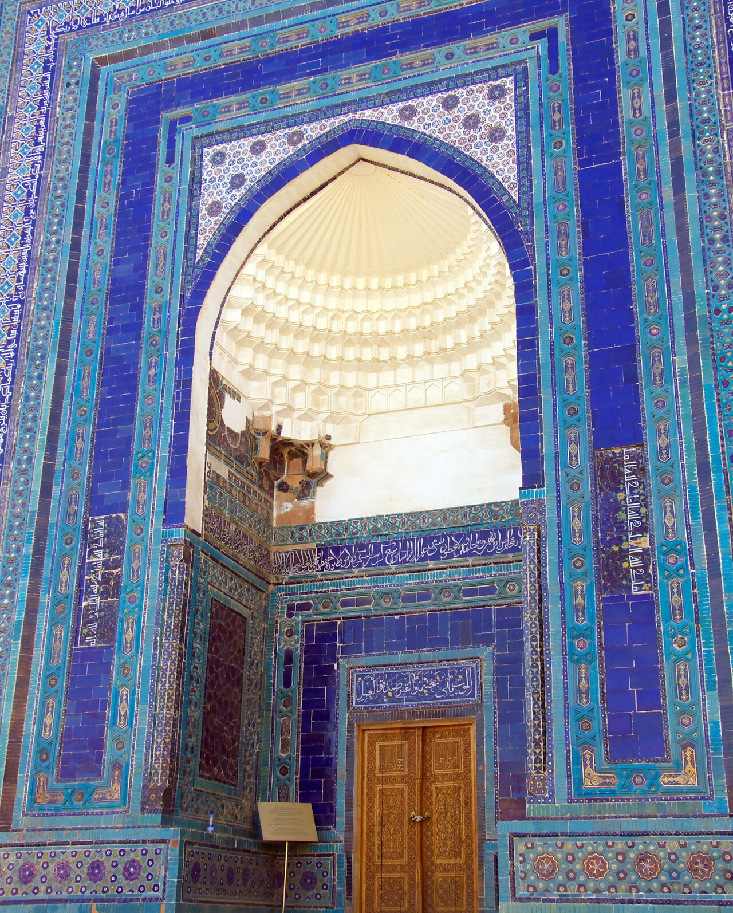
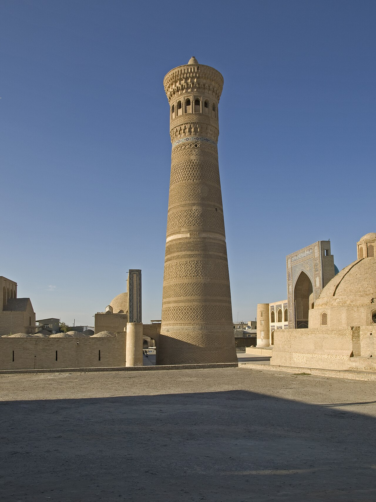
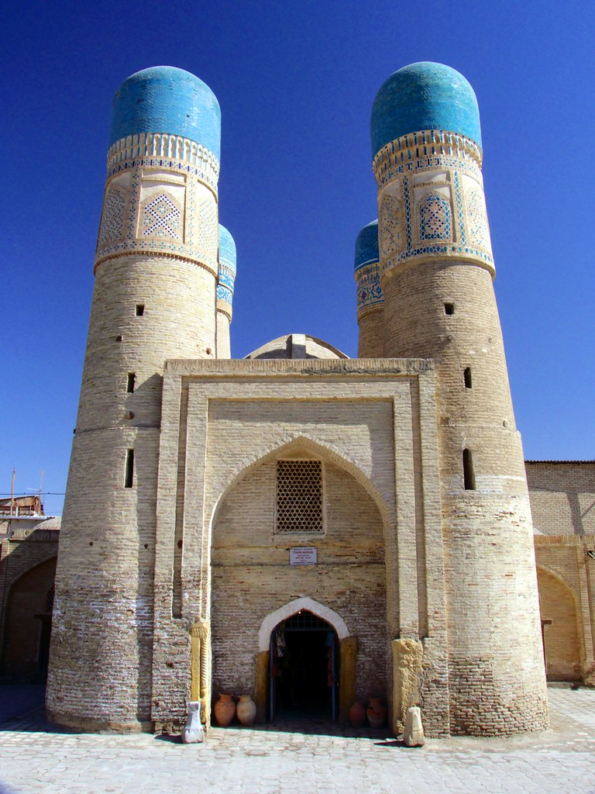
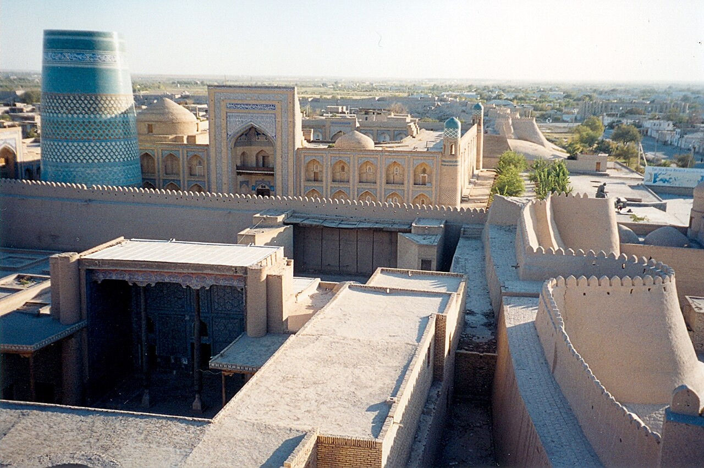

01
Samarkand
The blue city of Amir Temur: Registan, Shah-i-Zinda and the observatory of Ulugh Beg.
Bukhara · Samarkand · Khiva
Blue domes, caravan cities and two thousand years of stories — explained for curious travelers by someone who lives here.

Kalyan Minaret, Bukhara
About the channel
Uzbekistan sits at the crossroads of the old world. Merchants carried silk, paper and ideas through its oasis cities for centuries — and much of what they built is still standing. I live here, and I make short, clear videos about it: the history, the food and the practical tips you need before you go.
“Every city here is a chapter of the Silk Road. I want to show you how to read it.”
Destinations

The blue city of Amir Temur: Registan, Shah-i-Zinda and the observatory of Ulugh Beg.

A living museum of trading domes, madrasas and the 900-year-old Kalyan minaret.

A walled desert city frozen in time, where caravans rested before crossing the sands.
The route
Latest on the channel
Don't miss the next stop
Short, honest guides to Uzbekistan — the history, the food and the practical stuff — from someone who lives here.
Plan your trip
Since January 1, 2026, U.S. citizens can visit visa-free for up to 30 days. To be safe, your passport should be valid for at least six months.
Hotels register you automatically. Staying with friends? Your host registers you on Emehmon. Keep the slips — you may be asked for them when you leave.
There is a nonstop flight from New York (JFK) to Tashkent, about 12 hours. One-stop routes via Istanbul or the Gulf are sometimes cheaper.
The currency is the som. Cards work in many city hotels and restaurants, but bazaars and small towns run on cash. Bring clean, newer dollar bills.
Fast trains link Tashkent, Samarkand and Bukhara — book ahead in high season. Buy a local SIM at the airport for maps and taxi apps.
Spring (April–May) and autumn (September–October) bring warm days and cool nights. Summer in the desert cities is very hot.
Rules can change — always check official sources before you fly. Last checked: November 2026.